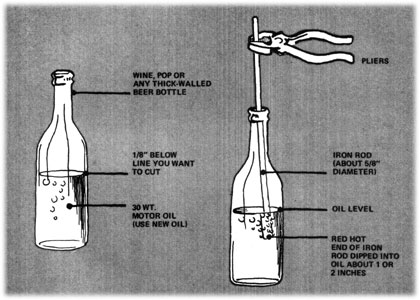

It's about time we shared with MOTHER's family a handy trick we've learned: the easiest way to shorten tall glass containers into drinking tumblers. We've used this method ourselves hundreds of times-even on square Jim Beam bottles-and we know it works.
Here's what you'll need (apart from the bottle): [1] a foot-long piece of 5/8-inch steel rod, [ 2] a small quantity of unused motor oil (I use the cheap standard weight), [3] a pair of pliers and [4] a heat source.
First fill the bottle with oil to an eighth of an inch below the level at which you want it to break (the liquid will rise slightly when you insert the rod). Before you attempt to cut the glass be sure that the fluid has settled and that none is clinging to the sides of the container above the planned line of cleavage. The colder the bottle and its contents are, the better ... I like to fill my future tumblers, leave them outside on a chilly night and finish the job in the morning.
When you're ready to operate, grasp the steel rod in the pliers and heat the first three inches or so to a tomato red. Then lower the hot end through the bottleneck a couple of inches into the oil and hold the metal steady for at least half a minute. Most glass will snap off with a clean break in about that time. We do, however, find that for some reason the thin throwaway containers occasionally won't cut. If your first attempt doesn't work, it's best to try another type of bottle.
When the neck has dropped off don't grab-or even touch-the lower part of the container ... it's full of scalding liquid and will burn your hands. Once the oil is cool, pour it off and store it for future use. Wash your new drinking glass with hot water and finish it by polishing the cut edge with an emery cloth or auto sandpaper.
Prosit!
|
 |
|
|